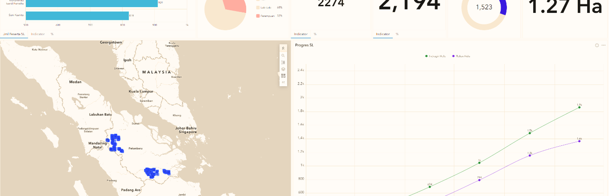

OUTCOME 2

A tool we developed to bring farmer and plantation data into one integrated view, making locations, farm areas, and farmer profiles easier to track and understand. It supports better monitoring, planning, and decision-making across the program.